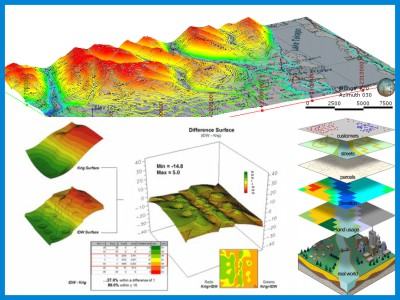

Perfil Marcos De Bortoli
Sou Marcos De Bortoli, um profissional da geotecnologia, atuando no setor de geoprocessamento há alguns anos. Atualmente sou servidor publico trabalhando no monitoramento do plano diretor de Palmas-TO

Sou Marcos De Bortoli, um profissional da geotecnologia, atuando no setor de geoprocessamento há alguns anos. Atualmente sou servidor publico trabalhando no monitoramento do plano diretor de Palmas-TO